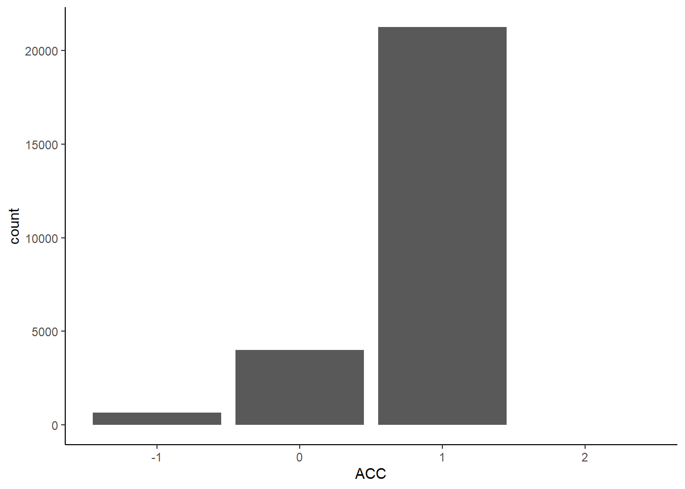
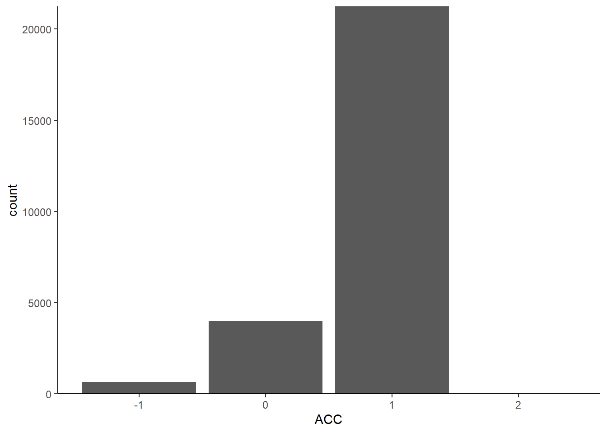
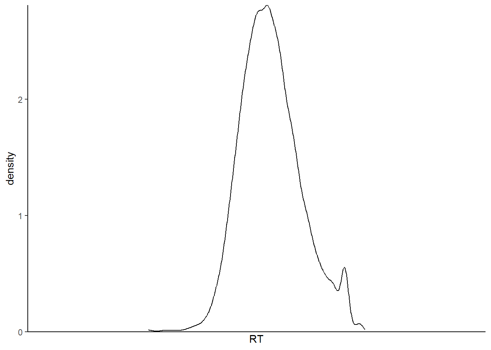
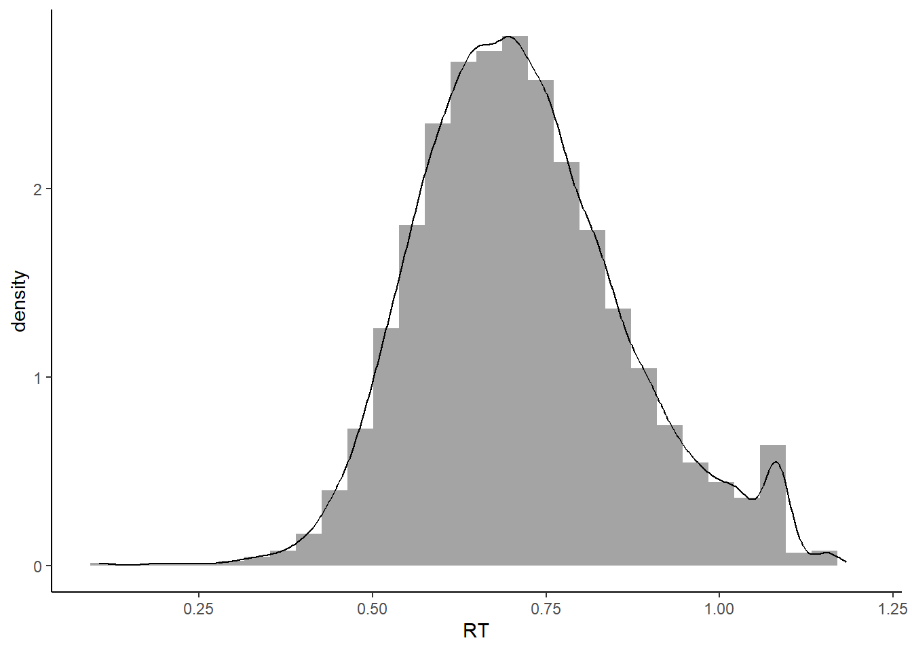
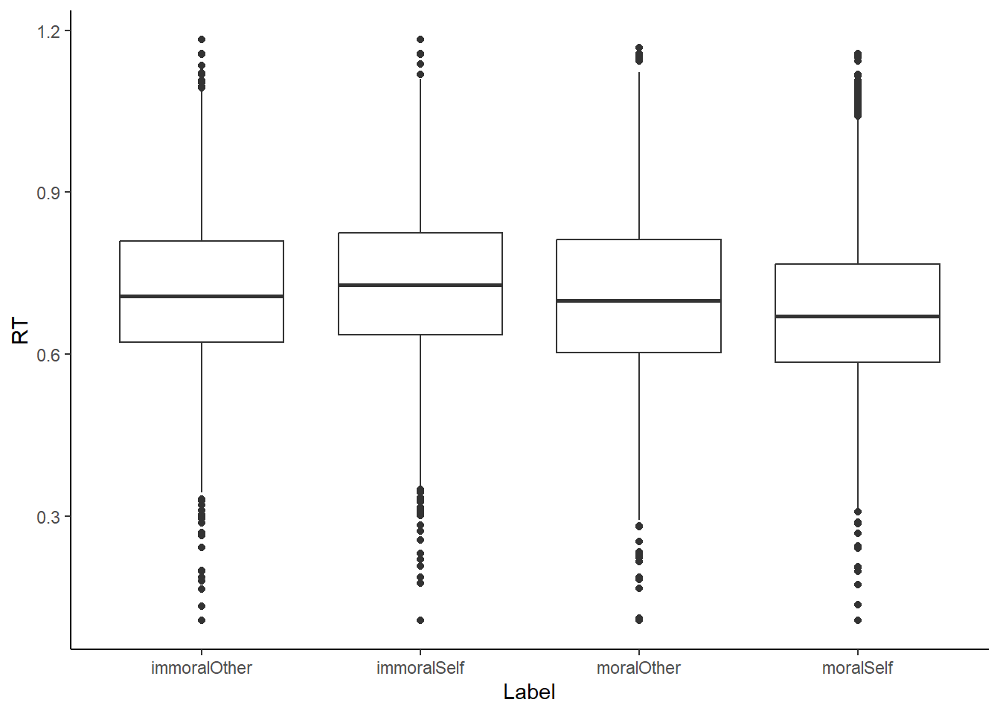
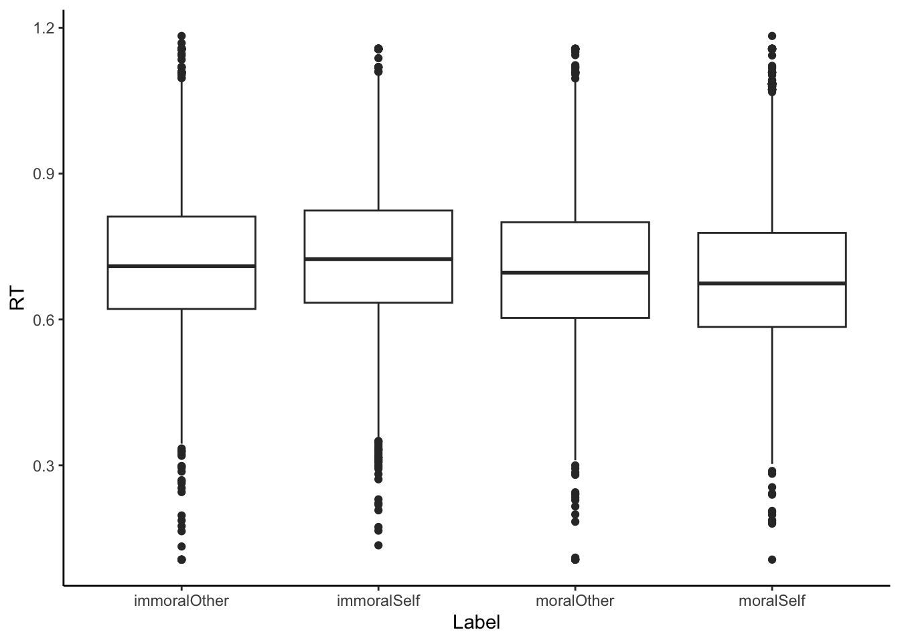
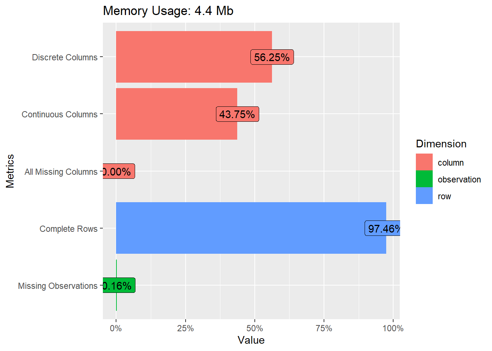
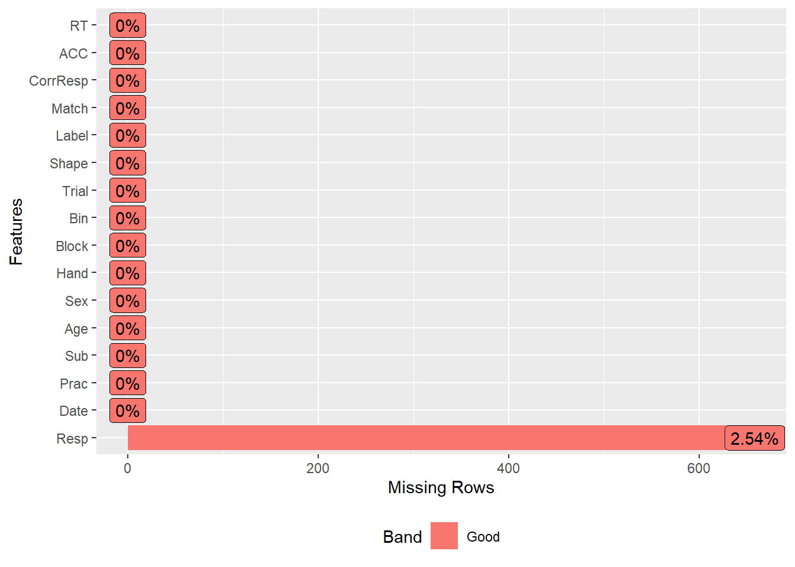
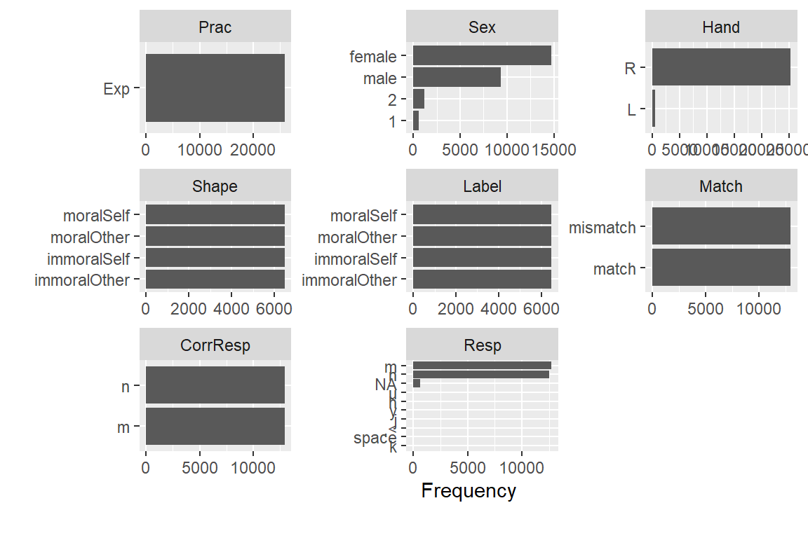
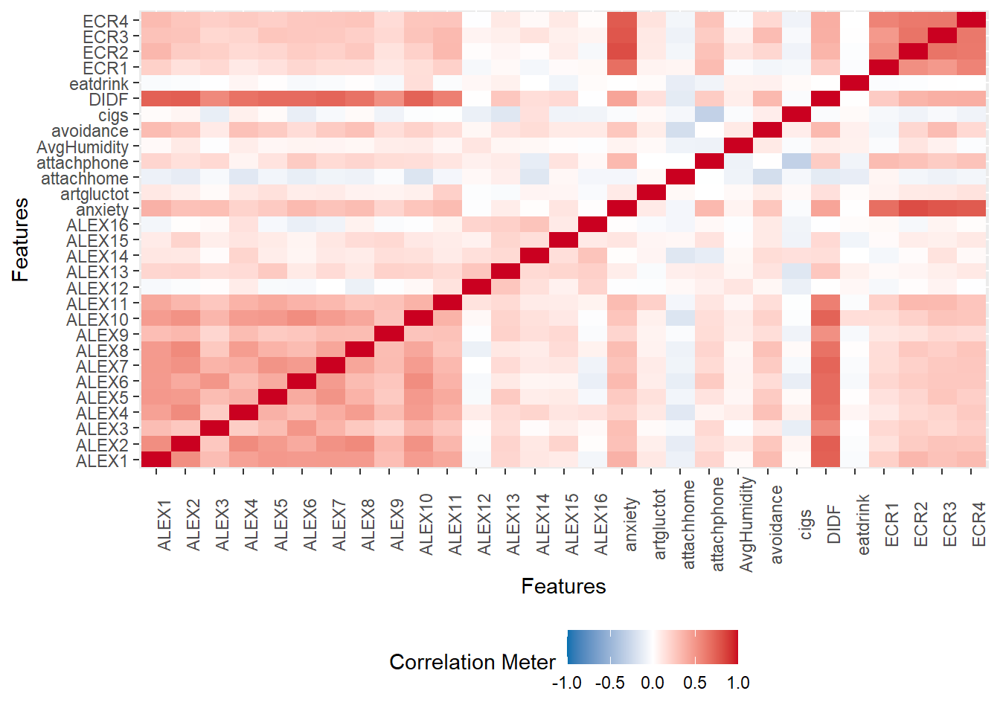

7 第六讲：如何探索数据: 描述性统计与数据可视化基础
7.1 描述性统计
本节课我们将讲探索性数据分析和数据可视化。探索性数据分析是数据科学中的一个重要概念，它可以帮助我们发现数据中的规律和问题。
在传统的心理学中，我们通常会清楚地知道要进行什么样的分析，但是在数据科学中，我们可能面临的是一个未知的数据集，我们不知道其中的规律和数据的结构。因此，探索性数据分析非常重要。
在本节课中，我们还将介绍数据可视化的方法，它可以帮助我们更好地理解数据。
在进行数据分析时，如果我们面对的数据结构不清晰，甚至不确定数据是否干净，那么探索性数据分析（EDA）就变得非常重要。EDA的目的是在我们不确定数据结构和分析方法的情况下，通过描述和可视化等方式初步了解数据，从而帮助我们决定下一步使用什么样的统计方法或数据分析方法。在现在的大数据时代，EDA已经成为数据科学家们非常普遍的操作。
进行EDA时，我们需要了解数据的基本信息，比如数据的列数、变量类型、变量值的范围以及变量之间的关系等。
# 检查是否已安装 pacman
if (!requireNamespace("pacman", quietly = TRUE)) {
install.packages("pacman") } # 如果未安装，则安装包
# 加载所需要的R包
pacman::p_load("tidyverse")
# 读取数据
df.pg.raw <- read.csv("./data/penguin/penguin_rawdata.csv",
header = TRUE, sep=",", stringsAsFactors = FALSE)
df.mt.raw <- read.csv('./data/match/match_raw.csv',
header = T, sep=",", stringsAsFactors = FALSE) 我们首先读取数据，这是我们之前都已经很熟悉的两个读取数据的语句。读取数据了之后，我们的命名方式现在基本上已经固定下来。比方说这个human-penguin-project的这个数据的话，我们就叫做df.pg.raw，这是原始的数据。然后对于那个match的数据的话，我们就叫df.mt.raw。
## [1] "Date" "Prac" "Sub" "Age" "Sex" "Hand"
## [7] "Block" "Bin" "Trial" "Shape" "Label" "Match"
## [13] "CorrResp" "Resp" "ACC" "RT"我们可以查看每一个数据框里面到底有哪些变量名，用这个colnames。对于我们这个column names比较有限的情况之下的话，我们其实可以用这种方法。比方说像这个mt的这个数据，我们column names之后的话就可以查看它所有的columns的这个名字。假如说它有几百行几千列的话，这个时候就这个命令就不适用了。
另外的话，我们就可以通常用这个head，就是这个用这个head命令来查看它有前面三行长什么样子。这是最开始了解这个数据。
我们还可以使用一个str命令。我们也可以用summary，比方说我们可以简单的找到它的这个数据的一个概况，就用summary这个函数。summary函数输出之后它也是一个data frame，然后我们也可以去这么查看。
如果我们想要去了解这个变量里面的一些我们常用来描述数值的一些统计量，比方说像平均值中位数标准差等等这种，也就是我们说的集中量数和差异量数。那么我们可以用就是psych这个包。那么psych这个包它实际上是主要用来做问卷分析的一个包。大家如果做问卷分析比较多的话，可能会对这个包会越来越熟悉。那么这个包里面有个describe这个函数，是用来描述这个数据的情况的。类似的还有像那个Bruce R那个包里面，它也有一个Describe，它也是可以帮助我们描述一个数据里的情况。
如果我想知道变量的平均数、中位数和标准差等统计量应该怎么办？在我们的数据框中，每个变量（即列）都有一个 n 表示行数，均值、标准差、中位数等常用的描述数据的值也会显示出来。如果我们想提取这些值，可以使用 summarize() 函数。例如，我们可以使用管道将数据框作为输入，然后使用 summarize() 函数来计算某个特定变量（例如 RT）的均值、标准差和行数。我们也可以自己找到感兴趣的变量的值。
# 使用dplyr包中的summarise()函数
df.mt.raw %>%
summarise(mean_RT = mean(RT),
sd_RT = sd(RT),
n_values = n())## mean_RT sd_RT n_values
## 1 0.7149504 0.1508394 25920需要注意的是，许多汇总数据的函数（例如均值或方差）不会自动忽略缺失值，因此我们需要在计算均值时添加一个参数（例如 na.rm = TRUE）来忽略缺失值。在使用 mean() 函数时，我们可以使用 ?mean 命令来查看具体的参数输入。
总之，我们可以使用描述性统计指标（例如均值和标准差）来了解数据框的情况。
7.2 ggplot2的基本使用
7.2.1 了解ggplot2
另一种方式是通过可视化的方式来了解数据。我们可以使用 ggplot2 包中的图层来构建图形，这是一种基于语法的图形描述方法。所谓gg源于“grammar of graphics”，即图形语法。
GGplot2是一种图形语法，它的核心是用图层来描述和构建图形。我们可以将数据映射到不同的图层中，然后将这些图层叠加起来形成最终的图形。
比如，我们可以用GGplot2来展示被试的正确率情况。我们可以从这个包中调用一个叫做GGplot的函数，然后将数据框作为参数传入。
aes(Aesthetics)是一个映射关系，它决定了如何将数据映射到图形空间中，并选择使用什么样的几何图形进行可视化。在GGplot2中，我们可以选择使用不同的几何图形，比如bar。
ggplot2::ggplot(data=df.mt.raw, # 指定数据
aes(x=ACC)) + # 确定映射到x轴的变量
geom_bar() + # 绘制直方图
theme_classic() # 设定绘图风格
此外，我们还可以选择不同的绘图风格，比如classical。GGplot2中有三个非常重要的成分，大家需要在自己的电脑上完成这个练习，否则很容易忘记。
我们可以使用数据来练习GGplot2的使用。首先，我们需要将数据读入到df.mt.row中，然后使用GGplot2来绘制图形。我们需要先加载tidyverse库，然后读取数据，最后才能开始绘图。
由于前面的课程已经讲解了如何使用library和读取数据，因此这节课是基于前面的数据处理知识的。我们需要回到前面的数据处理知识点，了解如何读取和合并数据。如果你没有保存数据到csv文件中，那么你可能会遇到找不到文件的问题。这个知识点是高度依赖的，前面的知识是后面的基础。如果你在使用前面的代码合并数据时速度太慢，你也可以使用U盘复制一下match_row.csv。
我们可以使用一个大的data frame，其中有很多行和列，其中一个是acc，它有很多值，例如1、0、0、1、1。
首先，我们需要使用一个命令来指定数据集，即以data frame作为输入，然后使用data参数和aes参数将数据映射到图层上。
ggplot2::ggplot(data=df.mt.raw, # 指定数据
aes(x=ACC)) + # 确定映射到x轴的变量
geom_bar() + # 绘制直方图
scale_y_continuous(expand=c(0, 0)) + # x轴在 y=0 处
theme_classic() # 设定绘图风格
现在，我们将x设置为ACC，这样我们只选择以它作为x轴。此时，它自动将x轴合并，并找到了它的独特取值，即-1、0和1。我们可以看到，如果将数据映射到二维空间中，它只有x轴，没有y轴。它自动帮我们补全了y轴，使用的是count，即每个取值的计数。
我们将这个数值映射到一个几何图形中，例如线段、点或条形图。我们选择使用条形图来表示count，因为它适合描述计数数据。因此，我们将数据以直方图的方式进行表示。最后，我们指定了以classical主题呈现图形，ggplot抱包含了很多预设的主题，可以根据自己的需要进行选择。在这个代码中，我们可以注释掉theme_classical()，然后运行代码，看看结果是否正确。如果没有出错，我们会发现画出的图形与之前不同，它有一个灰色的背景和方格。实际上，如果我们不使用theme_classical()，R会使用默认的风格来画图，这个风格可能与我们想要的不同。因此，使用theme classical可以帮助我们选择适合我们要的风格来进行可视化。
此外，我们还注意到，R的默认风格与我们在心理学或社会科学中常用的图形有所不同，例如字比较小，X轴的0点位置也不同。如果我们要在论文中呈现出这个图形，我们需要改变这些默认设置。我们可以使用scale_y_continuous命令来调整Y轴的连续数据，例如将X轴固定在0的位置。我们可以使用“scale y-continuous”命令来调整Y轴的连续数据。如果Y轴是离散数据，我们需要使用“discrete”命令。此外，我们可以在“theme”中调整字体、颜色和大小等细节，以满足特定目的。
ggplot2::ggplot(data=df.mt.raw, # 指定数据
aes(x=RT)) + # 确定映射到x轴的变量
geom_histogram() + # 绘制直方图
stat_bin(bins = 40) + # 设定连续变量分组数量
scale_x_continuous(name = "RT") + # 命名x轴
scale_y_continuous(expand=c(0, 0)) + # x轴在 y=0 处
theme_classic() # 设定绘图风格## `stat_bin()` using `bins = 30`. Pick better value with `binwidth`.
7.2.2 密度图
对于离散数据，我们可以使用条形图来表示，而对于连续数据，我们可以使用直方图或密度图。在直方图中，我们使用高度来表示数据的多少，而在密度图中，我们使用平滑曲线来表示数据的分布情况。在绘制图形时，我们可以使用“geom”命令来选择几何图形，如条形图或密度图。
ggplot2::ggplot(data=df.mt.raw, # 指定数据
aes(x=RT)) + # 确定映射到x轴的变量
geom_density() + # 绘制密度曲线
scale_x_discrete(name="RT") + # 命名x轴
scale_y_continuous(expand=c(0, 0)) + # x轴在 y=0 处
theme_classic() # 设定绘图风格
7.2.3 叠加绘图
我们可以将直方图和密度曲线叠加在一起，这样更能看到它们的分布情况。在这里，我们常用的叠加方式是将alpha参数设置为透明度，数值从0到1之间变化，越小表示透明度越高。我们可以将aes放在geom里面，这样就能够将图形相互叠加，看得更加清楚。alpha是多个条件画图时非常常用的参数。建立好数据映射关系后，我们可以先画一个直方图，然后在其上叠加一个密度图。
如果我们不想显示alpha设置透明度对应的图例，可以用guide隐藏起来。
ggplot2::ggplot(data=df.mt.raw, # 指定数据
aes(x=RT, # x轴的变量
y=after_stat(density), # y轴对应的是密度曲线
alpha=0.8)) + # 透明度
geom_histogram() + # 绘制直方图
geom_density() + # 绘制密度曲线
guides(alpha=FALSE) + # 隐藏透明度alpha设置带来的图例
theme_classic() # 设定绘图风格## Warning: The `<scale>` argument of `guides()` cannot be `FALSE`. Use "none" instead as
## of ggplot2 3.3.4.## `stat_bin()` using `bins = 30`. Pick better value with `binwidth`.
箱线图也是我们常用的一种图形，其中黑线表示median，box表示50%的quater，25%和75%的quater。如果我们将x换成一个以上的变量，就会出现四个以上变量的取值。
ggplot2::ggplot(data=df.mt.raw, # 指定数据
aes(x=Label, # 确定映射到xy轴的变量
y=RT)) +
geom_boxplot() + # 绘制箱线图
theme_classic() # 设定绘图风格
我们以四个独特的取值作为x，然后按照这四个条件将Rt分成四组。每一组都画成一个box plot，按照x的顺序排列，形成四个box plot的图。因为Rt是连续的数据，我们可以对它进行计算统计指标，例如median和四分位。这些数据分成上下两部分，上面50%下面50%、下面25%下面75%、上面25%下面75%。我们可以看到大量的数据都集中在这个附近，同时也可以看出它有一些变化。这主要是让我们初步了解不同条件下的反应情况。
另一个值得观察的是label。它按照字母顺序排序，因为它是字符类型的数据。在画图时，它会按照abcd的顺序进行排序。所以我们可以看到这个immoral在other之前，而i在m之前。这个顺序不一定是我们想要的，所以有时我们需要改变它的顺序。我们可以将Lable改为factor，并确定它的levels。然后我们可以使用mutate函数，例如label=factor(levels=c(“c”,“b”,“a”,“d”))，来改变它的顺序。这是画图时需要注意的小细节。
7.2.4 散点图
如果我们有两个变量，想要描述它们之间的关系，我们需要进行探索性分析。我们需要把x轴和y轴分别赋值，然后用点来描绘它们之间的关系。比如，我们可以看一个人在前测和后测的时候，他的体温的变化。我们可以用ggPlot来描述这个关系，x轴是temperature T1，y轴是temperature T2。
ggplot2::ggplot(data=df.pg.raw, # 指定数据
aes(x=Temperature_t1, # 确定映射到xy轴的变量
y=Temperature_t2)) +
geom_point() + # 绘制散点图
scale_x_continuous(name = "Temperature_t1") + # 修改X轴的名称
scale_y_continuous(name = "Temperature_t2") + # 修改Y轴的名称
theme_classic() # 设定绘图风格## Warning: Removed 30 rows containing missing values (`geom_point()`).
我们可以用点来描绘这个数据的关系，如果它们沿着对角线，就是一个高度相关的关系。我们也可以加一个回归线，用LM来拟合一个平滑的线来代表它们之间的关系。
当然，在进行数据探索之前，我们也可以对数据进行预处理。比如，我们可以用penguin data来求出两个问卷的平均分。如果我们需要求出两个问卷的平均分。我们可以使用penguin raw data作为输入，然后使用mutate命令生成两列新的变量。一列叫做stress_ave，表示stress的平均得分。另一列是对手机的依赖，我们同样可以求它的均分。这样我们就得到了两个新的变量，一个叫做stress_ave，另一个叫做phone_ave。
# 利用管道符，可以帮助我们更简洁地合并数据处理和可视化的过程。
df.pg.raw %>%
dplyr::mutate(stress_ave=rowMeans(.[,c("stress1", "stress2", "stress3","stress4", "stress5",
"stress6","stress7", "stress8", "stress9","stress10",
"stress11", "stress12","stress13", "stress14")]),
phone_ave=rowMeans(.[,c("phone1","phone2","phone3","phone4","phone5",
"phone6","phone7","phone8","phone9")])
) %>%
ggplot(aes(x=stress_ave,
y=phone_ave)) +
geom_point() +
geom_smooth(method="lm") + # 在散点图上叠加回归线，语法可以查找帮助文档
theme_classic()## `geom_smooth()` using formula = 'y ~ x'## Warning: Removed 18 rows containing non-finite values (`stat_smooth()`).## Warning: Removed 18 rows containing missing values (`geom_point()`).
然后我们把这个data frame作为输入到ggplot里面去，X轴是stress的均值，Y轴是对手机依赖的均值。我们用这个几何图形来表达我们的数据，然后用smooth找到它们相互之间关系的一个回归线。这个回归线是用的linear model，它还有一个回归线的CI，就是95%的一个置信区间。最后是我们这个画图的主题。看到阴影，实际上是R里默认的一个输入，它不仅有一个回归线，还有一个回归线的95%置信区间。
ggplot2是数据可视化中非常重要的工具，它可以帮助我们化繁为简，不需要为每个参数设定值，因为它有很多默认选项。这样，我们可以快速地进行数据探索，而不需要关注太多细节。
虽然图表中有许多元素和参数，但我们可以手动控制每个部分，如点的大小、颜色、XY轴的名字、刻度和字体大小等。我们可以在同一图表中叠加多个元素，如散点图、回归线、轴和分布等，以显示丰富的信息。ggplot是一个非常丰富的生态系统，包含许多不同类型的图表，我们可以根据需要进行选择。
通过Tidyverse下面的数据处理，我们可以直接用ggplot画图，从原始数据到最终图表都可以一个管道完成。ggplot是一个非常常用的工具，可以精确地定制我们想要呈现的图表，并直接输出为PDF格式，方便提交给杂志。
7.3 Data Explore
此外，Data Explore也r是一个很不错的数据探索工具，可以帮助我们快速探索数据。我们可以使用安装工具包来实现可视化，比如plot_string，它可以将DataFrame中的所有列名以可视化的形式表达出来，类似于思维导图中的树形图。我们可以试一试。另一个是plot_intro，它可以显示一些信息，比如有多少个离散数据列，有多少个连续数据列等等。我们可以看到，对于我们的匹配数据，离散列占56％，连续列占43％，所有列都是缺失值的占0％。每个数据至少都有一些值，完整的行占97.46％。缺失观测值的数量也可以通过可视化方式快速了解。
# load DataExplorer
pacman::p_load("DataExplorer")
DataExplorer::plot_str(df.pg.raw)
DataExplorer::plot_intro(df.mt.raw)
这是数据探索包的一个独特特点，它可以帮助我们快速可视化数据。关于缺失值，我们可以使用plot_missing命令将具有缺失值的列可视化。大多数列都没有缺失值，只有一个响应列有2.5％的缺失值。

我们可以看到，几乎所有数字化变量的计数都可以用条形图表示。例如，性别可以用female，male，2和1表示。我们可以看到，大多数人是右撇子，而匹配和不匹配的比例是一致的。如果我们在匹配条件下看到匹配比不匹配或不匹配更多，那么可能存在问题，因为我们的实验设计是一致的。同样，我们的实验条件应该是平衡的，因此看起来应该是一模一样的。

我们可以使用plot bar将所有变量以bar图的形式呈现出来。我们还可以根据match条件将数据分成matched和mismatched两部分，并用bar图表示每个部分的比例。在大多数情况下，matched和mismatched是平衡的。我们还可以使用histogram来快速绘制所有变量的分布情况，特别是连续变量的分布情况。我们可以使用qq plot来检验数据是否符合正态分布。

我们也可以绘制一个表之间的相关矩阵，这样就更有意义了。这个函数na.omit对我们来说非常有意义，因为它可以去除缺乏值的行，否则会报错。 我们前面介绍了一个非常常用的工具ggPlot，它是我们整个可视化中非常常用的一个工具。我们还介绍了一个用于数据探索的工具包Data Explorer，它集成了大量的函数，可以快速探索数据结构。大家可以去官网上看看，Data Explorer还有其他一些功能。现在大家可以根据我们课程中的代码来进行修改，练习自己写代码。 大家可以在Penguin Data里面找出两个自己感兴趣的变量，然后画一个散点图。要选择另外两个变量的话，首先你要知道有哪些变量，所以大家可能先要去查看一下这个数据包含哪些变量，然后选择两个变量画一个散点图来做练习。 今天我们布置一个小作业，大家可以在match的数据里面选出一个被试，然后把它每个条件以shape作为条件的话，就是画出它的那个反应式的分布。大家可以任意选出一个被试，画八个图出来，画它们的反应式的分布，然后用match和shape分开画，画这个直方图加上这个density plot。最基本的要求就是画出八个图，比方说shape就是immoral self match，match对吧，然后或者是这是第1个图immoral self mismatch第2个图，然后就是比方说immoral other match immoral other mismatch，这样排列组合你最后得到八个图。 你可以一个一个地画出这些图，这是最简单的作业。然后你可以发挥你的探索能力，对它进行更加 fancy 的呈现，比如进行排列组合，最后把它放到一个图里面。 我们刚刚讲到了 alpha 值，你可以画一个有两个条级条的图，然后用 alpha 值对它进行叠加，这样你就能把两个图放在一起，但仍然很清晰。当然，还有其他方式，比如你可以分开画这八个图，也可以把它们拼起来放到一个大图里面。这是一个有相当大自由度的小作业，基本的要求是把这八个图画出来，从读取数据开始到数据的选择，最后到画图。 最后我们希望大家都能够理解这个结构，我们的文件夹里面有这些数据，我们要在这个根目录里面进行操作。如果你的根目录跟我们不一样，我们就需要改一下代码，把它拼出来。每个同学都要选不同的被试，然后画出八种条件下的八个图，怎么画，怎么拼图，这个时候大家可以有自由发挥的空间。
在使用 R 的时候，我们肯定会不断报错。看到报错之后，第一个不应该是慌了，你应该仔细看这个报错到底说的是什么东西。这个报错本身提示了很多信息，它不是没有意义的。实际上你应该仔细阅读一下，它这个错误的信息到底提示你哪个地方是错了。所有的基本上90%的解决方案都是可以在这里面找到的。
- 读取match数据，对自己感兴趣的变量进行描述性统计。
- 读取match数据，对不同shape的击中率进行分组绘图，可使用boxplot观察差异。
- 读取penguin数据，选择自己感兴趣的两个变量进行处理并画出散点图。
- 对两个数据中自己感兴趣的变量们做探索性数据分析。
第二个练习是读取 match 的数据，根据不同的限制的击中率进行分组画图。现在我们需要回到上一节课，将deep prime的击中率数据保存下来，并根据这些数据进行画图。这是一个很综合的应用。
OK，我再重复一遍，第一次小作业，我们的数据是match的数据，只有我们这个matching task的数据。大家可以随便挑出一个base来，然后对这个base的数据，画它的反应时分布。反应时的分布，大家用什么方法，用什么图都可以。但是一定是反应时数据，第二个就是分布。然后是根据条件，根据不同的条件进行画。因为我们有match这个条件，还有一个shape这个条件，所以我们总共有八个条件。也就是说，我们至少要提交八个图，反映一个base在八个条件下的反应时的分布。大家可以自由发挥，但是我们要看到八个图，这是基本的。大家提交的格式是要用R Markdown，记录下自己的画图思路。 当读取数据时，要与我们的PPT中的格式一致。因此，最好将你的文件夹组织结构与我们的课件完全相同。否则，我们将无法读取你的文件夹，这表明你的文件夹组织结构存在问题。如果你在GitHub上或之前保存过文件夹，那么这个文件夹应该包含我们的每张PPT，以HTML格式和RMD文件。对于第一次作业，直接将其放在这个文件夹中。我们需要能够在打开文件夹后读取和运行它，不要出现错误。你明白了吗？这意味着你的根目录相对路径必须与我们的保持一致。在第二课中，我们将讨论相对路径。如果你有任何疑问，请随时问。如果没有问题，那么今天的课就结束了。谢谢大家！